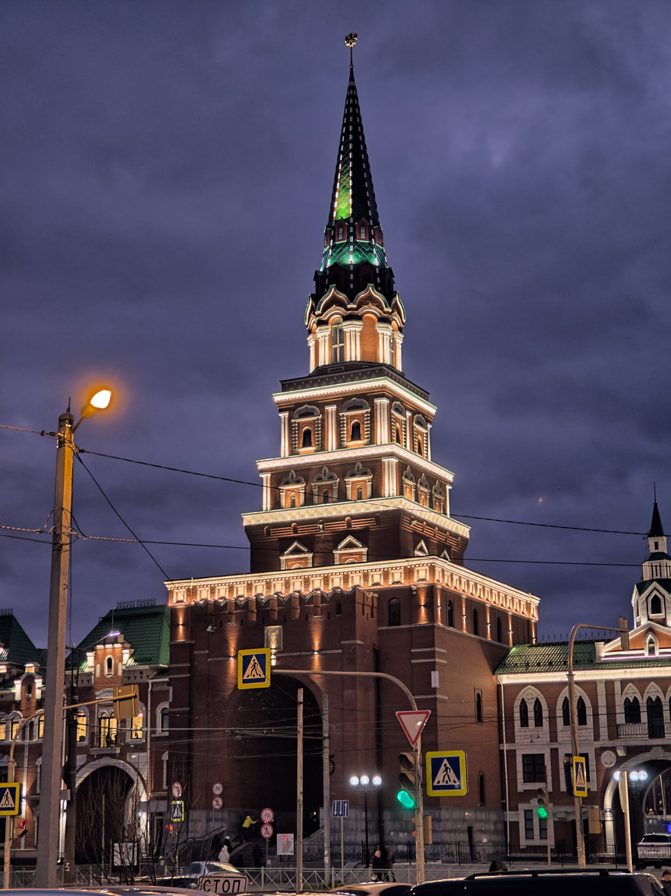
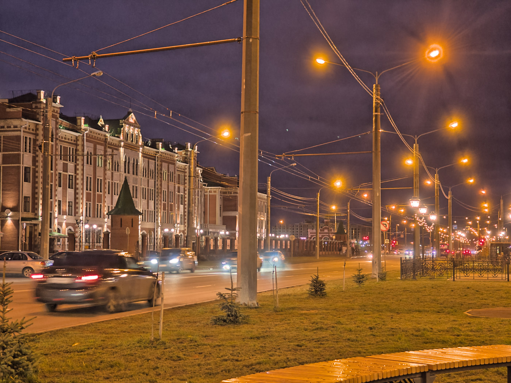
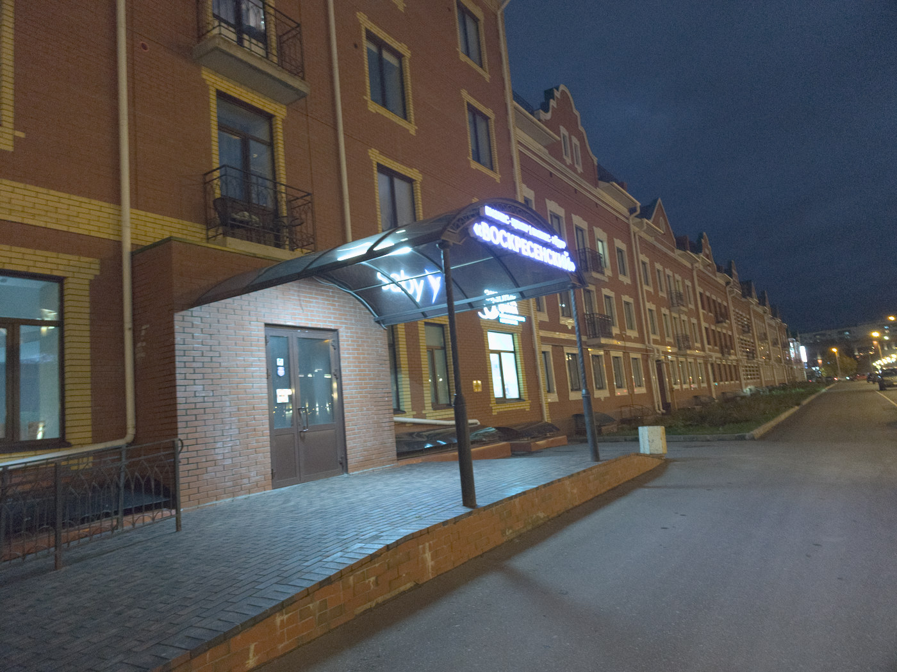

LightCraft Manual Editing Skill
Une skill qui apprend à un agent IA à retoucher des photos dans LightCraft 0.21.1 entièrement à la main : valeurs explicites des curseurs, vraie géométrie de masques, vrais gestes du pointeur. Pas de Auto, pas de magie.
Présentation
LightCraft est un développeur RAW open source et non destructif (alternative à Lightroom) avec un serveur MCP intégré. Ce dépôt est une skill prête à l'emploi pour OpenCode / Claude Code / Codex :
~/.config/opencode/skills/lightcraft/
├── SKILL.md # doctrine, flux de travail, routage des outils, pièges
├── references/ # 12 manuals consultables à la demande
└── scripts/ # lanceur MCP, lanceur de l'app, rafraîchissement, inventaire des modules
Elle couvre les 392 commandes, les 114 curseurs de développement, le schéma complet de develop, toutes les familles de masques, la suppression de points, Point Color, le HDR, la fusion de bracketing, l'export et les 41 préréglages intégrés avec leurs recettes numériques réelles.
Installation
git clone https://github.com/ildargiv/lightcraft-manual-skill.git \
~/.config/opencode/skills/lightcraft
Redémarrez votre agent pour qu'il rescanne les skills. Prérequis : LightCraft 0.21.1+ et Python 3 (uniquement pour les scripts utilitaires).
Connexion à l'application en direct (recommandé)
Le serveur MCP est enregistré dans opencode.json via un wrapper qui se répare tout seul :
"lightcraft": {
"type": "local",
"command": ["python", "<skills>/lightcraft/scripts/mcp-connect.py"],
"enabled": true
}
mcp-connect.py démarre l'application de bureau avec --control 7980 si nécessaire, puis transmet stdio à lightcraft-cli mcp --compact --connect 127.0.0.1:7980. L'agent dispose de tous les outils d'édition et des outils d'interface : screenshot, click, press_key, pointer_gesture, set_ui, clipboard.
Équivalent manuel :
powershell -ExecutionPolicy Bypass -File <skills>/lightcraft/scripts/start-lightcraft-app.ps1
Nos atouts
- Le travail manuel est une règle, pas un souhait. Interdit explicitement
develop.auto,develop.autoBwMix, Auto WB,crop.autoStraighten,geometry.upright auto,spot.findDust/findBlemishes,lensBlur.findSubject,preset.apply,develop.sync/autoSyncetdevelop.matchExposure. Chaque interdiction s'accompagne d'un remplacement manuel : nombres et coordonnées explicites. - Couverture complète de l'application. 392 commandes documentées, 114 curseurs avec plages/pas/valeurs par défaut, schéma
developcomplet, les 10 types de masques, pinceaux, composants, points, yeux rouges, Point Color, Lens Blur, courbes, HSL, étalonnage, optique, géométrie, impression, diaporama et archives. - Tous les préréglages décomposés en chiffres. Pour chacun des 41 presets intégrés, le contenu réel est exporté : quels champs sont fixés et à quelles valeurs. L'agent peut reproduire le look à la main et l'adapter à chaque image au lieu d'appuyer sur un bouton. S'y ajoutent 3 presets de courbe et 8 d'export.
- HDR de bout en bout.
develop.hdr+maxEv+hdr.sdr*, fusion de bracketing (merge.hdr,hdrBatch, panorama), export JPEG à gain map (ISO 21496-1), AVIF 10 bits PQ/HLG, PNG/JXL Rec.2020 PQ 16 bits et TIFF float 32 bits. Vérifié avec ffprobe :rgb48be,smpte2084,bt2020. Les aperçus sont toujours SDR — l'agent ne « corrige » pas un HDR invisible avec l'exposition. - Interface en direct et vrais gestes. Le mode connect fournit
screenshot,click,pointer_gestureetpress_key. L'agent voit le résultat dans la fenêtre LightCraft et peut tracer un pinceau ou un dégradé par un vrai geste en coordonnées normalisées, pas seulement par commandes. - MCP autoréparable. Le wrapper lance l'app avec le port de contrôle et supprime le conflit
catalog.lock(un serveur headless et l'app de bureau ne peuvent pas ouvrir la même bibliothèque). - Documentation qui se met à jour seule.
scripts/refresh-reference.pyrégénère les catalogues de commandes/curseurs et toutes les recettes de presets depuis la version installée, et la compare au dernier release GitHub. - Connaissance des modules et import sûr. Formats pris en charge (
.lcpreset, XMP,.lrtemplate,.cube,.dcp,.lceffect,.lccurve, SAM 3, denoise ONNX), import avecdryRun, revue critique des projets tiers et mise en garde contre les paquets pirates. - Validé sur de vrais RAW. Les exemples ci-dessous sont des DNG Xiaomi 13 Ultra développés à la main ; chacun inclut le JSON
developexact permettant de les reproduire. - Garde-fous. Expériences uniquement sur
photo.virtualCopy, exports de test dans temp, refus d'écraser les originaux/XMP, métadonnées traitées comme données non fiables,history.list/restoreetedit.undoà chaque étape.
Contenu
| Fichier | Contenu |
|---|---|
SKILL.md | Doctrine manuelle, pipeline d'édition, outils, interface, pièges |
references/controls.md | Tous les curseurs : id, min, max, défaut, pas |
references/develop-json.md | Schéma complet de develop et signification des champs |
references/masks-spots.md | Formes de masques, pinceaux, composants, points, yeux rouges, Point Color, Lens Blur |
references/hdr.md | Édition HDR, rendu SDR, fusion, export, vérification |
references/presets.md | 41 presets avec valeurs exactes, courbes, presets d'export |
references/manual-editing.md | 12 recettes par genre avec des valeurs concrètes |
references/export.md | Formats, tailles, métadonnées, filigrane, planche contact |
references/commands-edit.md | Commandes d'édition avec tous les paramètres |
references/commands-rest.md | Bibliothèque, métadonnées, impression, diaporama, visages |
references/library.md | Carte des fonctions hors édition |
references/addons.md | Modules, modèles et projets communautaires |
scripts/* | Lanceur MCP, lanceur d'app, rafraîchissement, inventaire |
Seven Xiaomi 13 Ultra RAW photos from one city shoot, developed by hand. No develop.auto, no preset.apply, no automatic straightening or subject detection. Each result comes with its exact settings JSON so you can reproduce it with lightcraft-cli render.
River HDR: headroom 3.5 EV, gradient sky mask, local tree mask


Flower shop at blue hour: manual 4200 K balance and split grading


Bell tower at blue hour: cool shadows, warm windows, shadow recovery


Old town at dusk: 4300 K by hand, architecture and street lights


Golden moose and city lights: controlled highlights, warm/cool grading


Night road with bokeh: 4000 K, noise control 25/30, light trails


Evening street: mixed lighting balanced manually, no Auto WB


All exports: metadata=none, 1400 px long edge, JPEG quality 88. The HDR example additionally writes an ISO 21496-1 gain map (hdrgm marker verified).
Vérifiez par vous-même
python scripts/addon-inventory.py
python scripts/refresh-reference.py
lightcraft-cli render examples/01-river-hdr/original.dng -o repro.jpg \
--settings examples/settings/01-river-hdr.json --size 1400 \
--opt metadata=none --opt quality=88 --opt hdr=true
Limites
- LightCraft est en alpha (0.21.1) et n'a pas encore d'API de plugins officielle — les « modules » sont des presets/profils/modèles importés et des utilitaires externes.
- SAM 3 n'est pas fourni (≈3,4 Go, licence Meta) ; les masques Object/Describe en ont besoin. Sky/Subject/Background fonctionnent sans lui.
- LightCraft ne peut pas afficher le HDR à l'écran : les aperçus sont toujours SDR. Jugez le HDR d'après la gain map / le fichier PQ exporté.
- Les dépôts tiers listés dans
addons.mdsont non officiels et non vérifiés ; examinez le code et les licences avant utilisation.
Licence
MIT — voir LICENSE. Le texte de la skill et les scripts sont des créations originales. LightCraft est un projet distinct de l'équipe ArtCraft (MIT OR Apache-2.0). Les DNG d'exemple restent la propriété de leur auteur et ne sont fournis qu'à titre de démonstration.
Fait pour un agent qui sait appuyer sur des boutons mais préfère travailler à la main.